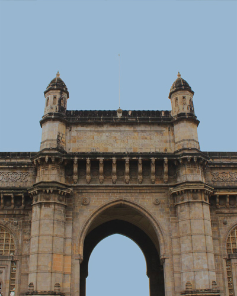
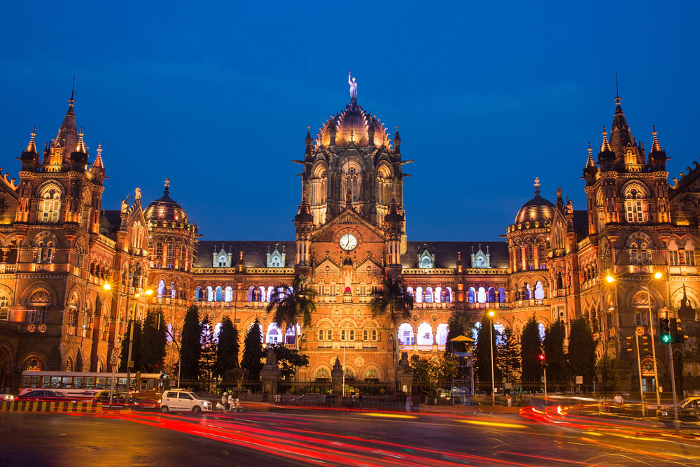
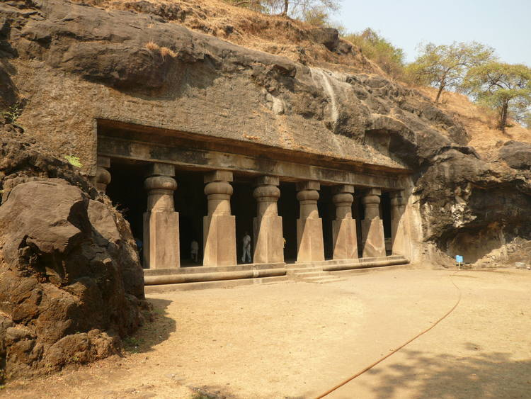
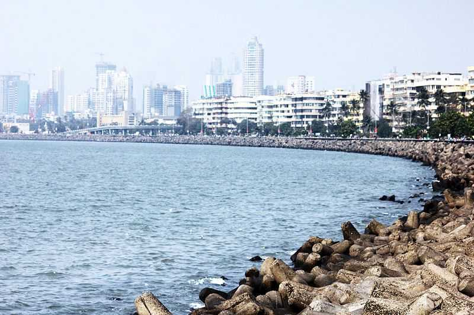

1.Gateway of India

The Gateway of India is an arch monument built during the 20th century in Mumbai, India. The monument was erected to commemorate the landing of King-Emperor George V and Queen-Empress Mary at Apollo Bunder on their visit to British India in 1911.Built in Indo-Saracenic style, the foundation stone for the Gateway of India was laid on 31 March 1911. The structure is an arch made of basalt, 26 metres (85 feet) high. The final design of George Wittet was sanctioned in 1914 and the construction of the monument was completed in 1924[citation needed]. The Gateway was later used as a symbolic ceremonial entrance to India for Viceroys and the new Governors of Bombay.It served to allow entry and access to India.
The Gateway of India is considered as a "symbolic monument" that represents the city of Mumbai, India.The Taj Mahal Hotel located opposite the Gateway of IndiaLocated opposite the Taj Mahal Palace & Tower hotel. For the British arriving to India, the gateway was a symbol of the "power and majesty" of the British Empire. Though built as a welcome to King George V for his visit of 1911, then an event of grand significance for British India and the British Empire, today serves as a "monumental memento" of British colonial rule over India.
2.Chhatrapati Shivaji Terminus

The Gateway of India is an arch monument built during the 20th century in Mumbai, India. The monument was erected to commemorate the landing of King-Emperor George V and Queen-Empress Mary at Apollo Bunder on their visit to British India in 1911.Built in Indo-Saracenic style, the foundation stone for the Gateway of India was laid on 31 March 1911. The structure is an arch made of basalt, 26 metres (85 feet) high. The final design of George Wittet was sanctioned in 1914 and the construction of the monument was completed in 1924[citation needed]. The Gateway was later used as a symbolic ceremonial entrance to India for Viceroys and the new Governors of Bombay.It served to allow entry and access to India.
CST has a total of 18 platforms—seven platforms are for suburban trains and eleven platforms (Platform 8 to Platform 18) are for inter city trains. Duronto, Garib Rath and Tejas Express leaves from Platform No. 18.Air-conditioned dormitories were inaugurated at CST on 16 April 2013. The facility has 58 beds for men and 20 for women.The station has been the location of filming the "Jai Ho" song in Slumdog Millionaire;and the 2011 Indian film Ra.One.The interior of the building was conceived as a series of large rooms with high ceilings. It is a utilitarian building and has had various changes required by the users, not always sympathetic. It has a C-shaped plan which is symmetrical on an east-west axis. All the sides of the building are given equal value in the design. It is crowned by a high central dome, which acts as the focal point. The dome is an octagonal ribbed structure with a colossal female figure symbolizing Progress, holding a torch pointing upwards in her right hand and a spoked wheel in her left hand.
3.Elephanta Caves

Elephanta Caves are a UNESCO World Heritage Site and a collection of cave temples predominantly dedicated to the Hindu god Shiva. They are located on Elephanta Island, or Gharapuri (literally "the city of caves") in Mumbai Harbour, 10 kilometres (6.2 mi) to the east of the city of Mumbai in the Indian state of Maharashtra. The island, located offshore about 2 kilometres (1.2 mi) west of the Jawaharlal Nehru Port, consists of five Hindu caves and a few Buddhist stupa mounds that date back to the 2nd century BCE,as well as a small group of two Buddhist caves with water tanks.
The Elephanta Caves contain rock cut stone sculptures that show syncretism of Hindu and Buddhist ideas and iconography.The caves are hewn from solid basalt rock. Except for a few exceptions, much of the artwork is defaced and damaged. The main temple's orientation as well as the relative location of other temples are placed in a mandala pattern. The carvings narrate Hindu mythologies, with the large monolithic 20 feet (6.1 m) Trimurti Sadashiva (three-faced Shiva), Nataraja (Lord of dance) and Yogishvara (Lord of Yoga) being the most celebrated.
4.Marine Drive

Marine Drive is a 3.6-kilometre-long Boulevard in South Mumbai in the city of Mumbai, India. The road was constructed by late philanthropist Bhagojisheth Keer & Pallonji Mistry. It is a 'C'-shaped six-lane concrete road along the coast, which is a natural bay. The road links Nariman Point to Babulnath and Malabar Hill. Marine Drive is situated on reclaimed land facing west-south-west. A promenade lies parallel to this road. Marine Drive is also known as the Queen's Necklace because, when viewed at night from an elevated point anywhere along the drive, the street lights resemble a string of pearls in a necklace.
The official name for this road, though rarely used, is Netaji Subhash Chandra Bose Road. The promenade is lined with palm trees. At the northern end of Marine Drive is Chowpatty Beach. This is a popular beach famed for its Bhel puri (local fast food). Many restaurants also line this stretch of the road. Further down this road lies Walkeshwar, a wealthy neighborhood of the city, also home to the Governor of Maharashtra
BACK TO HOME